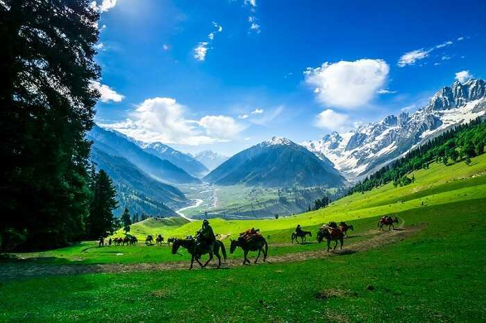

Kashmir Tourism
"Paradise on Earth"
Location :Jammu aaaaand Kashmir India
Popularly referred to as the "Paradise on Earth," Kashmir is a breathtaking region in northwestern India.
Historically part of the princely state of Jammu and Kashmir, Jammu & Kashmir was declared a Union Territory in 2019.
The major cities in the Kashmir Valley include Srinagar, Gulmarg, Anantnag, and Baramulla.
Nestled in the Pir Panjal and Karakoram mountain ranges of the Himalayas,
it is known for its scenic splendor, snow-capped mountains, plentiful wildlife, exquisite monuments,
hospitable people, and handicrafts.
Kashmir is home to Asia's longest Cable Car - Gulmarg Gondola, an enchanting experience.
The Shikara in the Dal Lake of Srinagar cannot be missed! The exquisite Mughal gardens like Nishat Bagh, Shalimar Bagh,
and Chashm-E-Shahi are also must-visits.Kashmir's trekking and hiking routes are spellbinding, dotted with the most beautiful
mountain peaks, massive glaciers, verdant meadows, and tall pine trees.
Some popular trekking routes are Kashmir Great Lakes Trek and Tarsar Marsar.
While adventure sports like Skiing, golf, river rafting, paragliding, and camping make the trip to Kashmir more adventurous,
Amarnath and Vaishno Devi attract many pilgrims yearly. Kashmiri cuisine, or Wazwan, is
famous all over the globe. So, in Kashmir, trying out the local dishes rich in unique fragrant spices is a must.
Also, the Kashmiri shawls, Kashmiri apples, and dried fruits (almonds and walnuts) from the Lal Chowk Market are a must-buy.
Be mindful of heavy snowfall affecting connectivity to some destinations in Kashmir during the winter months of December to February.
Best Time: May to June, September to October
Places To Visit In Kashmir

Srinagar |

Gulmarg |

Sonamarg |